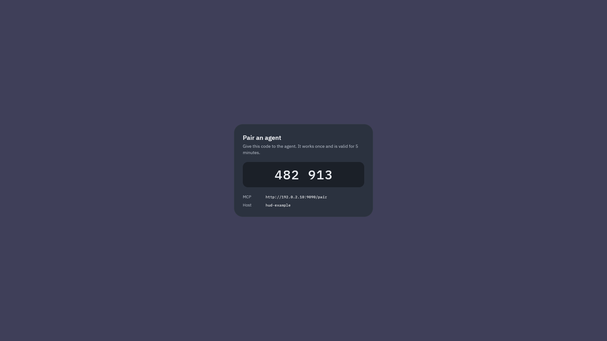
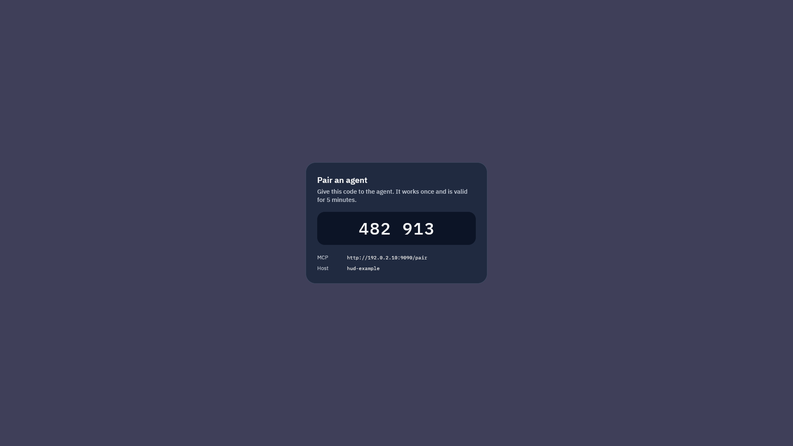
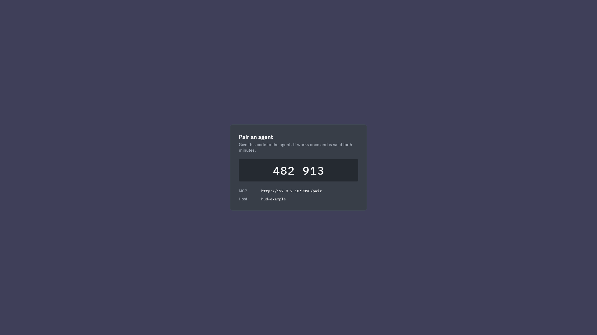
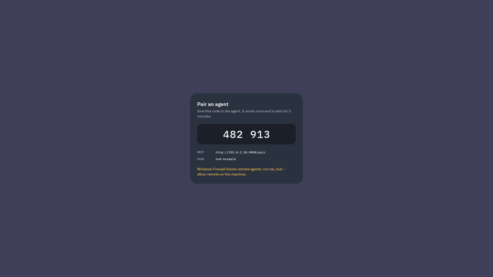
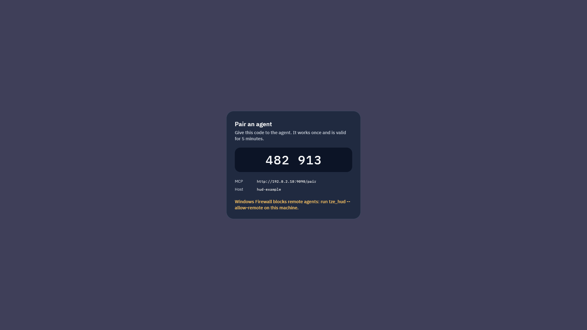
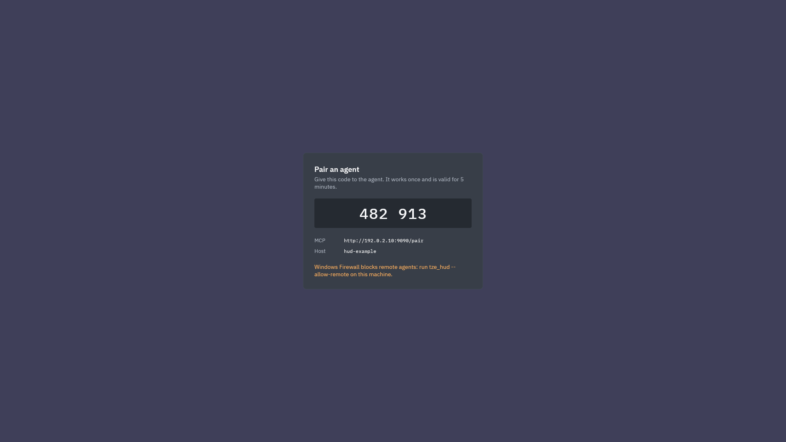
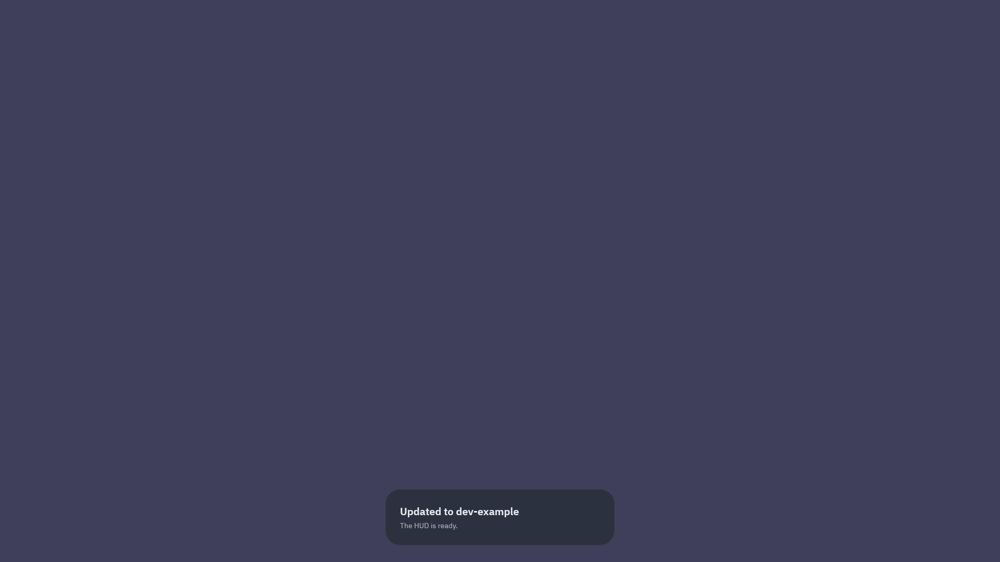
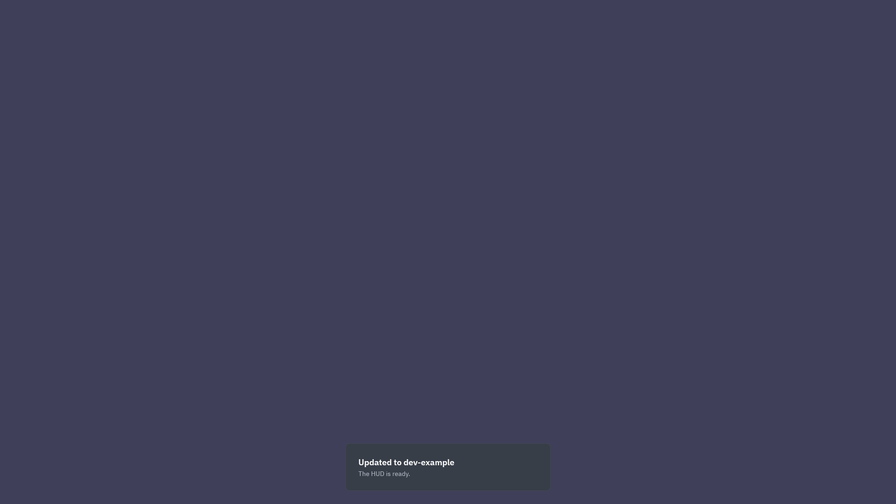

Clean source 273bf18d0e3a · 3 synthetic owner-only fixtures × 3 themes · actual llvmpipe windowed GPU capture.
Owner BEFORE missing; AC3 incomplete. These images do not substitute for a current Windows owner BEFORE or owner visual acceptance. No live code, private address or owner host was used. The package remains draft; owner AFTER/signoff stays open in hud-h51u7.8.6.
Evidence scope · Capture manifest. CSS viewports show each card at its original pixel size; links open the untouched full-frame PNG.







